| group | total |
|---|---|
| European/Other | 31274 |
| Māori | 41787 |
| Pasifika | 6993 |
| Unknown | 5632 |
3 Visual Features
In Chapter 1, we described a data visualisation as a set of mappings from data values to data symbols (Figure 1.3). In Chapter 2, we established some basic properties of the visual system, which will help to explain how well the encoding of data values to data symbols can be reversed to decode from data symbols back to data values (Figure 2.1). We also identified three levels of visual processing: visual features, visual shapes, and visual objects (Figure 2.3).
There are many possible mappings between data values and data symbols. For example, in Section 1.1, we saw that the same data values could be mapped in different ways to produce different data visualisations (e.g., Figure 1.1 and Figure 1.2). The remainder of this book explores different sorts of mappings and why they are more or less effective for different purposes.
In this chapter, we start with a very simple sort of mapping. We will begin to explore data visualisations where each data value is encoded as a basic visual feature of a data symbol. Furthermore, in these data visualisations, one data value is mapped to one data symbol (Figure 3.1).
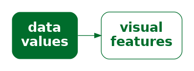
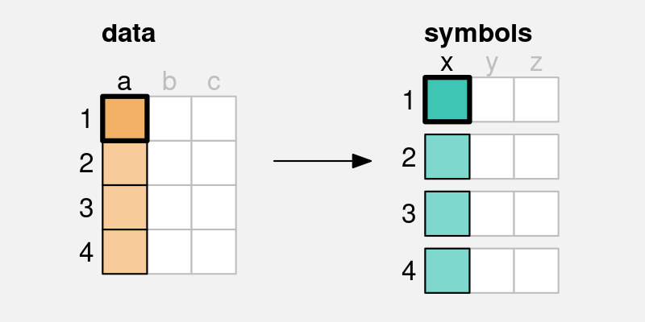
x) is mapped to a visual feature (a) of a single data symbol.
3.1 Bar plots
A good example of this sort of simple mapping is a bar plot. In order to demonstrate bar plots, we will work with a data set containing the total number of offenders aged 14 to 16 in New Zealand between 2011 and 2021, for different ethnic groups. The data values are shown in Table 3.1. A bar plot of these data is shown in Figure 3.2.
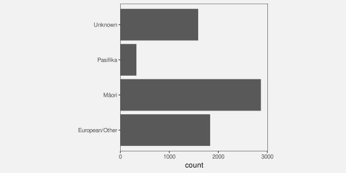
We can see that, for each data value in Table 3.1, there is a single bar in the bar plot. For example, each total number of offenders is mapped to a single bar.
In terms of decoding (Figure 2.1), this means that we can decode individual data values from each data symbol. For example, we can decode a single total number of offenders from each bar.1
This allows us to answer simple questions about individual data values. For example, what is the largest total number of offenders?
3.2 Visual features
The data symbols in Figure 3.2 are a set of bars or, put more simply, rectangles. We have seen that each data value from Table 3.1 is mapped to one of these rectangles. For example, each total number of offenders is mapped to a rectangle.
However, we can look more closely at the mapping and consider how individual data values are being encoded as a data symbol. For example, the total number of offenders for each ethnic group is encoded as the length of a rectangle (Figure 3.3). Each data value is mapped to the length of one rectangle.2
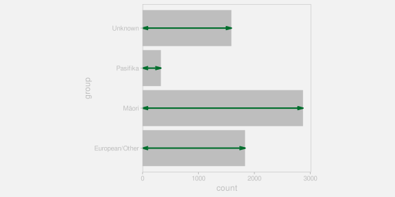
Each ethnic group data value in Table 3.1 is also mapped to a rectangle in Figure 3.2. In terms of encodings, each ethnic group is encoded as the vertical position of one rectangle (Figure 3.4).
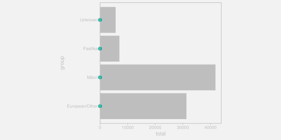
Length and position are examples of basic visual features (Section 2.2). One way to make an effective data visualisation is to encode data values as the basic visual features of a data symbol. This is effective because basic visual features are identified rapidly and without conscious effort by our visual system.
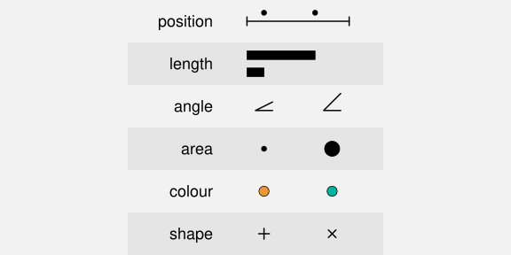
One reason why a bar plot is an effective data visualisation is because it involves a mapping from data values to the basic visual features of data symbols—the positions and lengths of bars—and basic visual features are processed rapidly and subconsciously by our visual system.
Figure 3.5 shows some other examples of basic visual features that are commonly used to encode data values in a data visualisation.3 We will explore each of these in more detail in the following sections.
3.3 Quantitative features
As we discussed in Chapter 2, the real purpose of encoding data values as data symbols is to make use of the visual system to decode back to data values from the data symbols. In this section, we are considering mappings from data values to basic visual features, so we need to consider how well we are able to decode from visual features to data values (Figure 3.6).

One issue to consider is whether a visual feature is able to represent all of the information in the data values.4 Some types of data contain more information than others:
Quantitative data consists of numeric values, which naturally possess not only an ordering, but information about the size of differences between values. For example, the year 2020 comes after the year 2010 and there is a gap of 10 years in between. This is also referred to as interval data. Ratio data is quantitative data that also contains a “zero” reference value, so there is also information about absolute size and ratios of differences. For example, 200 offenders is twice as many as 100 offenders.
Qualitative data consists of categorical values. Ordinal data consists of categories that are ordered, but there is no information about the size of differences. For example, a “high” crime level is more severe than a “medium” crime level, which is more severe than a “low” crime level, but we cannot measure the size of the differences. Nominal data consists of just group labels, e.g., ethnic groups, and the only information we have is that the categories are different from each other.
Figure 3.7 shows that position, length, angle, and area are visual features that are capable of representing quantitative data values. For example, a bar that is twice as long as another bar comfortably represents a data value that is twice as much as another data value. All but position also possess a natural representation of zero.
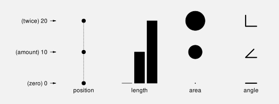
By contrast, Figure 3.8 shows that colour and pattern are not capable of representing quantitative values. For example, the colour blue is not twice the colour green and a plus sign is not 10 more than a triangle. We can tell that there are three different values, but in effect, these visual representations lose information. It is not possible to decode the data values from the visual represenations.
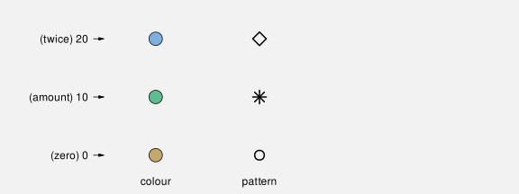
The bar plot in Figure 3.2 visualises the total number of offenders, which are quantitative data values. These quantitative values are encoded as the lengths of bars, which is a visual feature that is capable of conveying all of the information in quantitative values.
One reason why a bar plot is effective for visualising quantitative data values is because the quantitative data values, the counts, are mapped to a quantitative visual feature, the lengths of the bars.
3.4 Qualitative features
If we have qualitative data, then we are primarily concerned with conveying whether data values are the same or different. Figure 3.9 shows that position, colour, and pattern are capable of representing qualitative data values. For example, blue is clearly different from green, which is clearly different from brown. In Section 2.7 we saw that we also easily identify visual objects that have the same visual features.
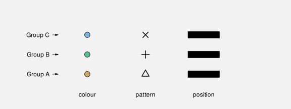
By contrast, Figure 3.10 shows that length, area, and angle are not appropriate for representing qualitative data values. While we can identify whether lengths or areas are different from each other, these visual features imply an inherent order, which is misleading because that adds information that is not present in the data values.
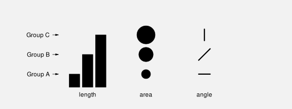
The bar plot in Figure 3.2 encodes the ethnic groups, which are qualitative data values, as the position of bars, which is a qualitative visual feature.
One reason why a bar plot is effective for visualising qualitative data values is because the qualitative data values, the groups, are mapped to a qualitative visual feature, the positions of the bars.
3.5 Accuracy
Another issue that impacts on how well we can decode the data values from a visual feature (Figure 3.6) is the accuracy with which we can perceive quantitative values from visual features. For example, how well can we perceive the size of the difference between the length of two bars?5
It is easy to demonstrate that judgements of this sort are harder for some visual features than others. For example, Figure 3.11 presents sets of three bars, which differ by length, circles, which differ by area, and stars, which differ by pattern (number of spikes). Judging the relative sizes of the bars is easier than judging the relative sizes of the circles and decoding the stars is extremely difficult.
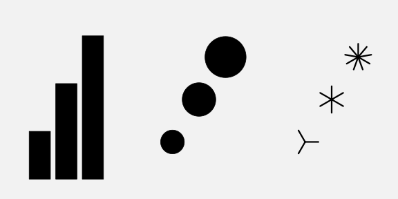
This issue has been studied experimentally and Figure 3.12 shows the established ordering of the accuracy of basic visual features, with more accurate visual features at the top.6 A data visualisation that encodes data values as visual features near the top of this ranking will be more effective than one that encodes data values as visual features near the bottom.
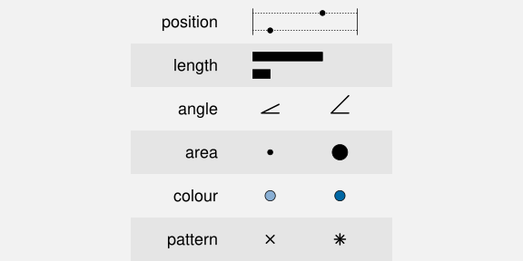
The bar plot in Figure 3.2 encodes the total number of offenders, which are quantitative values, as the lengths of bars, which is an accurate visual feature. This means that viewers can make accurate comparisons between the lengths of the bars.
One reason why a bar plot is effective for visualising quantitative data values is because the quantitative data values, counts or proportions, are encoded as a very accurate visual feature, the lengths of the bars.
3.6 Capacity
When we are visualising qualitative data values, we are no longer concerned with accurately perceiving the size of differences; all we are concerned with is perceiving whether two values are different or the same. To be slightly more precise, we are concerned with being able to identify different values, for example, which colour, out of a set of known colours, is this one?7
The issue in this scenario is the capacity of a visual feature: how many different categories can be represented? In particular, how many different categories can be represented with the viewer able to reliably identify each separate category?
Figure 3.13 shows that colour has a limited capacity. A small number of different colours are very easy to differentiate, but the differences become harder to perceive with a greater number of colours.8 This difficulty only increases with irregular arrangements.
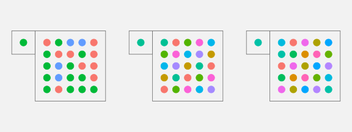
Pattern also has a very limited capacity (Figure 3.14), again exacerbated by less regular arrangements.9
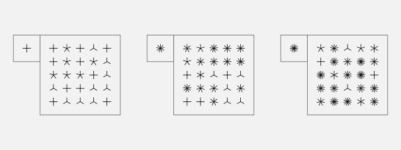
By contrast, Figure 3.15 shows that position has a greater capacity. We can easily identify the location of the single dot even as the number of alternative locations becomes large.
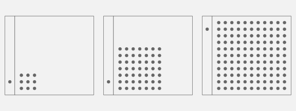
The bar plot in Figure 3.2 encodes the ethnic group as the vertical position of bars, which makes it easy to identify the different ethnic groups.
One reason why a bar plot is effective for visualising qualitative data values is because the qualitative data values, the groups, are encoded as a visual feature that has excellent capacity, the positions of the bars.
3.7 Case study: Dot plots
We have seen that, for several reasons, Figure 3.2 is an effective way to visualise the total number of offenders for different ethnic groups. Figure 3.16 shows an alternative representation of these data in the form of a dot plot10
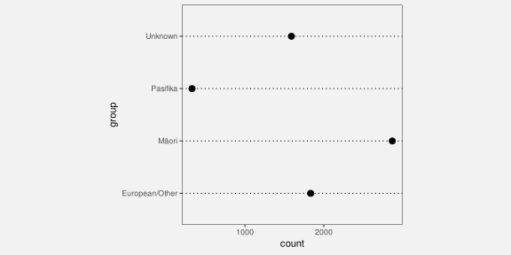
Like a bar plot, a dot plot is an effective data visualisation, and for very similar reasons. Dot plots uses a different data symbol—data points instead of bars—but each data value is encoded as the basic visual feature of one data symbol. This means that we can decode individual data values from the data symbols and answer questions like: what is the difference in the number of offenders between Māori and European/Other?
Furthermore, the quantitative data values (the totals) are encoded as the horizontal position of the points, which is a visual feature that is not only capable of representing numeric values, it is also a very accurate visual feature. The qualitative data values (the ethnic groups) are encoded as the vertical position of the points, which is a visual feature that is capable of representing qualitive data and is a visual feature with a high capacity.
It could be argued that the dot plot in Figure 3.16 is even more effective than the bar plot in Figure 3.2 for perceiving the differences between totals because position ranks higher than length in Figure 3.12. On the other hand, if we want to compare totals in terms of their ratios, Figure 3.2 is superior because it includes a representation of zero.
3.8 Case study: Pie charts
Figure 3.17 shows yet another visualisation of the total number of offenders for different ethnic groups, this time a pie chart. This is a less effective representation of the data than the bar plot in Figure 3.2 or the dot plot in Figure 3.16 and we can use familiar reasoning to see why.
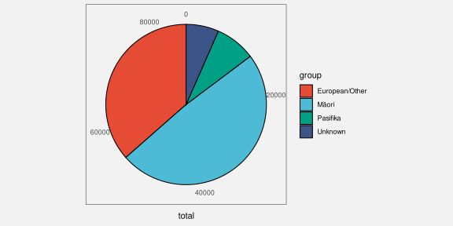
The data symbols in Figure 3.17 are wedges or segments of a circle and again we have each data value mapping to a single data symbol. For example, each ethnic group maps to a separate wedge of the pie. As with bar plots and dot plots, in a pie chart the data values are encoded as basic visual features of these symbols. However, a pie chart makes use of different visual features: The total values are encoded as the angle and/or area of the wedges and the group values are encoded as the colour of the wedges.11 Although colour is an appropriate visual feature to represent qualitative data, and it has sufficient capacity to differentiate between only four groups, the encoding of quantitative values as angle and/or area leads to less accurate decoding of the total number of offenders. For example, it is much harder to decode the number of offenders with an unknown ethinicity from the pie chart in Figure 3.17 compared to the bar plot in Figure 3.2 or the dot plot in Figure 3.16.
Although the situation seems bleak for pie charts, we have not yet seen all of the ways that we can assess different mappings of data values to data symbols. We will return to pie charts in Section 7.2 to show that all is not lost.
3.9 Summary
A simple mapping of data values to data symbols involves mapping each data value to a separate data symbol. This allows the viewer to decode individual data values from the data symbols.
A simple mapping of data values to data symbols also involves encoding each data value as a basic visual feature of the data symbol: position, length, area, angle, colour, and pattern. This is effective because visual features are decoded rapidly and without conscious effort.
Position, length, area, and angle are appropriate for encoding quantitative data because we can decode amounts from these visual features. We can decode position and length more accurately than area and angle.
Position, colour, and pattern are appropriate for encoding qualitative data because we can decode differences from these visual features. We can represent a large number of categories using position, but only a few categories using colours and patterns.
Bar plots, dot plots, and pie charts all provide examples of simple mappings from data values to data symbol. We can decode bar plots and dot plots accurately because they involve encodings of data values to position and length. We cannot decode pie charts as accurately because they involve encoding data values to angle and area.
Bertin, Jacques. 1983. Semiology of Graphics: Diagrams, Networks, Maps. Madison, WI: University of Wisconsin Press.
Chen, Lin. 1982. “Topological Structure in Visual Perception.” Science 218 (4573): 699–700. https://doi.org/10.1126/science.7134969.
Cleveland, William S. 1985a. “Graphical Methods for Data Presentation: Full Scale Breaks, Dot Charts, and Multibased Logging.” The American Statistician 39 (4): 270–80.
Cleveland, William S. 1985b. The Elements of Graphing Data. Monterey, CA: Wadsworth Advanced Books; Software.
Cleveland, William S, and Robert McGill. 1984. “Graphical Perception: Theory, Experimentation, and Application to the Development of Graphical Methods.” Journal of the American Statistical Association 79 (387): 531–54.
Davis, Russell, Xiaoying Pu, Yiren Ding, Brian D. Hall, Karen Bonilla, Mi Feng, Matthew Kay, and Lane Harrison. 2024. “The Risks of Ranking: Revisiting Graphical Perception to Model Individual Differences in Visualization Performance.” IEEE Transactions on Visualization and Computer Graphics 30 (3): 1756–71. https://doi.org/10.1109/TVCG.2022.3226463.
Eells, Walter Crosby. 1926. “The Relative Merits of Circles and Bars for Representing Component Parts.” Journal of the American Statistical Association 21 (154): 119–32. https://doi.org/10.1080/01621459.1926.10502165.
Healey, C. G. 1996. “Choosing Effective Colours for Data Visualization.” In Proceedings of Seventh Annual IEEE Visualization ’96, 263–70. https://doi.org/10.1109/VISUAL.1996.568118.
Heer, Jeffrey, and Michael Bostock. 2010. “Crowdsourcing Graphical Perception: Using Mechanical Turk to Assess Visualization Design.” In Proceedings of the SIGCHI Conference on Human Factors in Computing Systems, 203–12. ACM.
Hill, Andrew, and Oshiorenua Imokhai. 2025. “There’s More Than One Way to Get Information from Infographic Glyphs: Evidence That People Use Both Area and Height to Extract Information.” Information Visualization 24 (3): 227–45. https://doi.org/10.1177/14738716251315912.
Li, Jing, Jarke J. van Wijk, and Jean-Bernard Martens. 2009. “Evaluation of Symbol Contrast in Scatterplots.” In 2009 IEEE Pacific Visualization Symposium, 97–104. https://doi.org/10.1109/PACIFICVIS.2009.4906843.
Mackinlay, Jock. 1986. “Automatic Design of Graphical Presentations of Relational Information.” ACM Transactions on Graphics (TOG) 5 (2): 110–41.
McColeman, Caitlyn M., Fumeng Yang, Timothy F. Brady, and Steven Franconeri. 2022. “Rethinking the Ranks of Visual Channels.” IEEE Transactions on Visualization and Computer Graphics 28 (1): 707–17. https://doi.org/10.1109/TVCG.2021.3114684.
Miller, George A. 1956. “The Magical Number Seven, Plus or Minus Two: Some Limits on Our Capacity for Processing Information.” Psychological Review 63 (2): 81–97. https://doi.org/10.1037/h0043158.
Munzner, Tamara. 2014. Visualization Analysis and Design. CRC Press.
Pointer, M. R., and G. G. Attridge. n.d. “The Number of Discernible Colours.” Color Research & Application 23 (1): 52–54. https://doi.org/https://doi.org/10.1002/(SICI)1520-6378(199802)23:1<52::AID-COL8>3.0.CO;2-2.
Stevens, Stanley Smith. 1957. “On the Psychophysical Law.” Psychological Review 64 (3): 153–81.
Tremmel, Lothar. 1995. “The Visual Separability of Plotting Symbols in Scatterplots.” Journal of Computational and Graphical Statistics 4 (2): 101–12. https://doi.org/10.1080/10618600.1995.10474669.
Ware, Colin. 2021. Information Visualization: Perception for Design. 4th ed. Morgan Kaufmann.
Wilkinson, Leland. 2005. The Grammar of Graphics. Second edition. New York: Springer.
Zhang, Jiajie. 1996. “A Representational Analysis of Relational Information Displays.” International Journal of Human-Computer Studies 45 (1): 59–74.
Ziemkiewicz, Caroline, and Robert Kosara. 2009. “Embedding Information Visualization Within Visual Representation.” In Advances in Information and Intelligent Systems, edited by Zbigniew W. Ras and William Ribarsky, 307–26. Berlin, Heidelberg: Springer Berlin Heidelberg. https://doi.org/10.1007/978-3-642-04141-9_15.
This one-to-one mapping between data values and data symbols is called a bijective mapping (Ziemkiewicz and Kosara 2009).↩︎
Some authors prefer to say that the total number of offenders is mapped to the position of the “top” of the rectangle (e.g., William S. Cleveland and McGill 1984), but the difference is not significant because both length and position are excellent visual features in terms of decoding (Section 3.5).
It is also worth noting that there can be a discrepancy between the encoding that the creator of a data visualisation employs and the decoding that the viewer chooses to use (Hill and Imokhai 2025).↩︎
In this book, we use visual feature to describe a basic visual quality of a data symbol, in place of more established terms like visual variable (Bertin 1983), aesthetic (Wilkinson 2005), or visual channel (Munzner 2014).
This choice of terminology is deliberate so that we can elide the basic visual quality of a data symbol with the early stages of visual processing (Section 2.2). There is not a direct correspondence between these two concepts, but it is a useful simplification.
There are also differences in terminology for individual visual features. For example, we use angle where others use tilt or slope and the underlying visual feature is typically referred to as orientation.
The use of pattern for what is more commonly referred to as data point shape is perhaps the most daring terminological divergence. Data point shape is commonly included as a visual channel, but we would like to avoid confusion with the concept of visual shape that we use to represent later stages of visual processing (Section 2.2). The use of pattern provides a connection to basic visual features via the early perception of patterns, even though there is more involved in the perception of data point shape (Chen 1982; Li, Wijk, and Martens 2009).↩︎
The idea of matching the type of data—nominal, ordinal, interval, or ratio—as well as the categorisation of visual feature types is described in Zhang (1996). Munzner (2014), following Mackinlay (1986), refers to this idea as expressiveness.↩︎
The pioneering work on the accuracy of different visual features for statistical graphics was carried out by William S. Cleveland and McGill (1984). Their results have been replicated several times in subsequent studies, including Heer and Bostock (2010). The rankings were extended to a larger set of visual features by Mackinlay (1986), although somewhat only by inference from other psychophyscial results, rather than by direct experiment.
Munzner (2014), following Mackinlay (1986), refers to this idea as effectiveness.
An argument for ranking the accuracy of visual features can also be made from Steven’s Law (Stevens 1957), which states that the perception of the magnitude of different stimuli follows a power law. For example, the perception of length has a power of approximately one (linear), which suggests that we accurately perceive the magnitude of lengths, while area has a power less than one, which suggests that we underestimate the magnitude of areas.↩︎
In William S. Cleveland and McGill (1984), comparisons of bars were treated as position judgements rather than length judgements, unless the bars were unaligned (see Section 5.2), so this table is a slightly fuzzy representation of their results. However, the general ordering of visual features is basically consistent with William S. Cleveland and McGill (1984).
These rankings are also based on a relative judgement (what proportion of A is B?), which is just one possible decoding task, albeit a common one, particularly for bar plots. The ranking of visual features may differ for other sorts of decoding (McColeman et al. 2022). There is also some evidence that the rankings may differ between individuals even for simple relative judgements (Davis et al. 2024).↩︎
The question “Which one is this?” is different from the question “Are these two different?”. The former involves “absolute judgements” (Miller 1956) to identify a stimulus from a known set of stimuli. The latter involves relative judgements and just-noticeable differences (JND), which are considerably easier and something we have a much higher sensitivity to. For example, we can differentiate between several million different colours (Pointer and Attridge, n.d.), but we can only make absolute judgements with up to 10 different colours.↩︎
The recommended maximum number of colours varies between sources. However, the consensus is that it is a quite small number.
“Do not use more than 10 colors for coding symbols if reliable identification is required, especially if the symbols are to be used against a variety of backgrounds.” (Ware 2021, 126).
The research evidence for the limited capacity of pattern is suggestive rather than conclusive. The recommendations of experts only extend to very small sets of patterns.
For example, William S. Cleveland (1985b) recommends using the following set of patterns, in this order:
o,+,<,s, andw.Tremmel (1995) only provides guidance for three different patterns and suggests using separate plots to accommodate a larger number of categories (when relying on pattern).↩︎
Dot plots (William S. Cleveland 1985a) are different from scatter plots because they plot one quantitative variable against (at least) one qualitative variable, rather than plotting two quantitative variables against each other.↩︎
We are assuming here, as is common, that the viewer will decode from the angle of pie wedges. That is not necessarily the case, for example Eells (1926) found evidence that viewers may decode from the area, arc length, or even chord length of pie wedges. Fortunately, the larger point holds, because most of these alternatives are relatively poor visual features in terms of decoding accuracy.↩︎